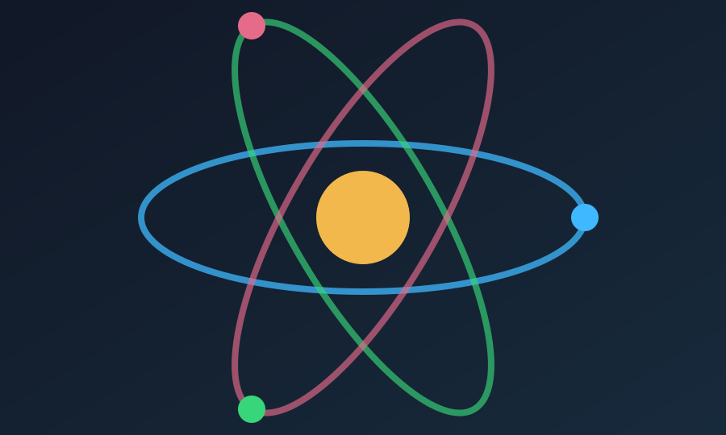
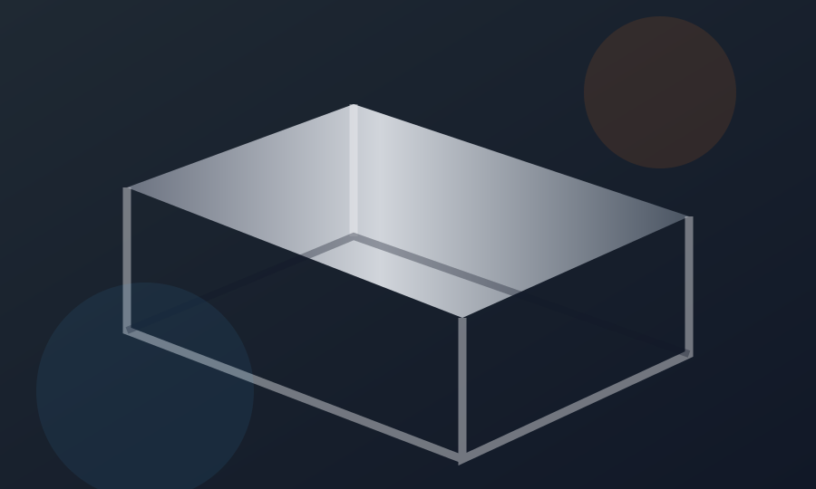

Atomi dhe Nën-Grimcat
Gjatë gjithë historisë besohej se atomi ishte thërrmija e fundit e pandashme e materies. Kurani sfidoi këtë mendim qindra vite para zbulimit të grimcave nënatomike.
Lexo Artikullin5 tema të përzgjedhura.

Gjatë gjithë historisë besohej se atomi ishte thërrmija e fundit e pandashme e materies. Kurani sfidoi këtë mendim qindra vite para zbulimit të grimcave nënatomike.
Lexo Artikullin
Një zbulim i mahnitshëm i astrofizikës moderne zbuloi se hekuri në Tokë ka origjinë jashtëtokësore, një fakt i theksuar me një folje të vetme, të saktë në Kuran.
Lexo Artikullin
Përveç idesë se hekuri “u zbrit”, QuranMiracles ndalet edhe te lidhjet numerike të sures El-Hadid: numri atomik 26, numri i sures 57 dhe disa përkime me izotopet e hekurit.
Lexo Artikullin
QuranMiracles e lidh idenë e krijimit në çifte me strukturën e materies, ku fizika dhe kimia moderne zbuluan grimca dhe kundërgrimca që qëndrojnë në ekuilibër të saktë.
Lexo Artikullin
QuranMiracles vëren se Kurani flet për peshën e atomit dhe edhe për gjëra më të vogla se ai, një formulim që lidhet ngushtë me matjen moderne të materies.
Lexo Artikullin